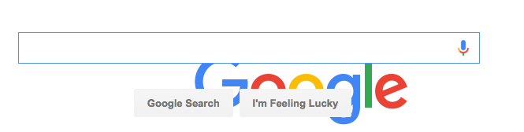
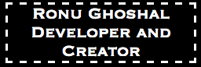
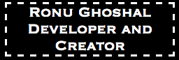

Welcome back! This week we've been learning the language CSS and its many techniques for styling, formatting, and positioning elements of your web page. In this blog entry we'll discuss three CSS properties that can be adjusted to help you arrange your website's content - margin, border, and padding.
First let's discuss margins. CSS margins are used to set the amount of space outside an element's border (we'll discuss borders later on in this blog). You can specify margin-left (the amount of space to the left of an element), margin-right, margin-top, or margin-bottom. For example, I have used the code
{ margin-top: 150px; margin-left: 150px; }
to move the Google image 150 pixels downward and 150 pixels to the right from its original position (screenshot below).
{ margin-top: 150px; margin-left: 150px; }
to move the Google image 150 pixels downward and 150 pixels to the right from its original position (screenshot below).

You can also set all four margins with the margin property, going counterclockwise from the top. Using the Google example we just demonstrated, this would be expressed as
{ margin: 150px 0px 0px 150px; }
You can also use "margin: auto" to center an element horizontally within the element that contains it. Margins can be expressed in pixels (px) or in a percentage of the containing element.
{ margin: 150px 0px 0px 150px; }
You can also use "margin: auto" to center an element horizontally within the element that contains it. Margins can be expressed in pixels (px) or in a percentage of the containing element.
Now let's get into CSS borders. The border
property can be used to draw a line (solid, dashed, dotted, and many other styles) around any or all sides of an HTML element. For example, the code
{border: 3px dashed; }
would result in a dashed border with the width of 3 pixels, surrounding the element that it's applied to - like this example below:

You can also use the properties border-top, border-right, border-bottom, and border-left to specify the settings for an individual border side. In addition, you can use border-color to specify a color - otherwise, the border will default to the current text color.
{border: 3px dashed; }
would result in a dashed border with the width of 3 pixels, surrounding the element that it's applied to - like this example below:

You can also use the properties border-top, border-right, border-bottom, and border-left to specify the settings for an individual border side. In addition, you can use border-color to specify a color - otherwise, the border will default to the current text color.
Lastly, let's talk about the use of padding in css. The padding property can be used to set the size of space between an element's content and its border. Take the previous example with the dashed border around it. If I wanted to increase the distance between the text and the border, I could use the following code:
{padding: 20px }
This adds 20 pixels of padding to each side (If I wanted to, I could choose to add padding to the individual sides using padding-left, etc...) See below what 20 pixels of padding looks like:
Of course, this isn't very effective use of padding, as it has now overlapped with other HTML elements! Still, this gives you an idea of how it can be used to adjust the distance between an element's content and its border.
{padding: 20px }
This adds 20 pixels of padding to each side (If I wanted to, I could choose to add padding to the individual sides using padding-left, etc...) See below what 20 pixels of padding looks like:
Of course, this isn't very effective use of padding, as it has now overlapped with other HTML elements! Still, this gives you an idea of how it can be used to adjust the distance between an element's content and its border.
For further discussion of these CSS elements, I encourage readers to check out W3Schools, as they have some great material on the topic. I hope this has been an informative and enlightening read!